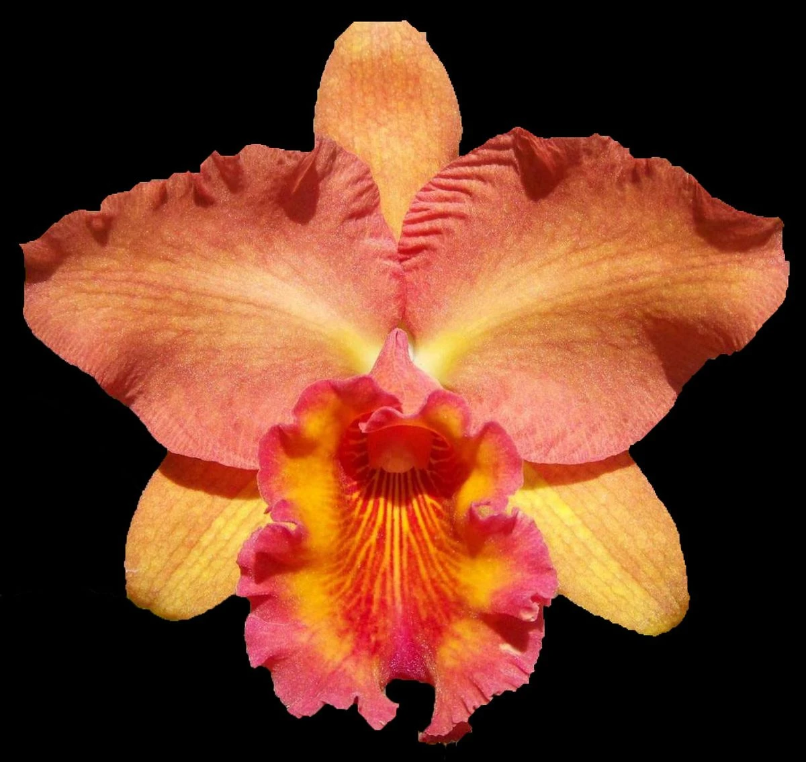
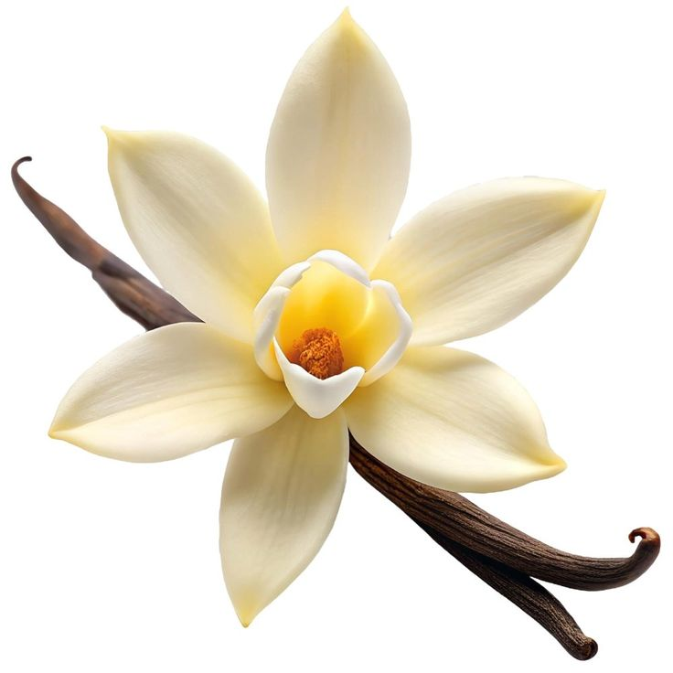

From auction room to supermarket
Cloning collapsed the price in a single generation. The flower that once signified enormous wealth now sits by the tills between the tulips and the wrapping paper, and there is something quietly wonderful about that.
People have eaten orchids, drunk them, worn them, worshipped them, mortgaged houses for them and been shot over them. Very little of this is about gardening.
Around 300 BC, Theophrastus — Aristotle's successor, and the closest thing the ancient world had to a botanist — described a Mediterranean plant with a pair of rounded tubers under it. He called it órkhis. The word means testicle.
The whole family, 28,000 species of it, still carries that name.
It had consequences. Under the doctrine of signatures — the old idea that a plant's shape advertises what it treats — orchids acquired a reputation as an aphrodisiac and a fertility charm that lasted well into the seventeenth century. Herbals gravely advised which of the two tubers to give a couple who wanted a son. This was, one hopes, not billed as science.
The tubers were also food. Dried and ground, they make salep, a starchy flour that thickens milk into something between a drink and a custard. It has been an Ottoman winter staple for centuries and is still sold hot on Turkish streets.
It came to Britain too. Eighteenth-century London had saloop stalls selling it hot before dawn to market workers, and it was popular enough to be a genuine rival to coffee for a while. Coffee won.
The modern problem is arithmetic: it takes thousands of wild tubers to make a kilogram of salep flour, and the plant has to be dug up to get them. Harvesting for salep is now a serious threat to wild orchid populations across Turkey, Iran and Greece, and Turkey has banned its export.
China took a completely different line. There, the orchid — lan, usually a modest green Cymbidium — became a symbol of integrity: fragrant in an empty valley whether or not anyone comes to admire it.
It is one of the Four Gentlemen of Chinese painting, alongside plum blossom, chrysanthemum and bamboo, and it has been painted, in ink, by people practising virtue rather than horticulture, for well over a thousand years.


a whole century of very rich men
behaving extremely badly
about a flower.
The story usually starts in 1818, with a consignment of tropical plants arriving in England for the collector William Cattley. The interesting specimens were disappointing. The packing material — coarse, fleshy stems used as padding — was thrown onto the compost, except for a few pieces Cattley potted up out of curiosity.
One flowered. It was enormous, frilled, mauve and entirely unknown, and John Lindley named it Cattleya labiata after him. Then, in one of botany's great farces, the location it had come from was mislaid for most of the next seventy years.
Wealthy Victorians began competing for tropical orchids with the energy usually reserved for warfare. Great nurseries — Veitch of Exeter, and above all Frederick Sander of St Albans, who styled himself the Orchid King — sent professional collectors to the Amazon, Borneo, Colombia, Madagascar and New Guinea with instructions to bring back everything.
The methods were what you would expect from an unregulated boom. Collectors felled thousands of trees to strip the epiphytes off the canopy, then sometimes burned what was left so that no rival could return to the site. They filed false coordinates. They sabotaged each other's shipments. A number of them died of fever, drowning, or violence, and the trade absorbed the news and carried on.
The plants went to London auction rooms and sold for sums that are difficult to translate but easy to feel: single rare specimens changing hands for more than a skilled worker earned in several years. Most died within months in coal-heated Victorian glasshouses, which only pushed the price of the next shipment up.
The Victorians did not want orchids. They wanted an orchid nobody else had. Those are very different appetites, and only one of them can be satisfied.the whole of entry five, in two sentences
In 1862, three years after On the Origin of Species, Darwin published a book with a title only he could love: On the Various Contrivances by which British and Foreign Orchids are Fertilised by Insects.
It was not a detour. It was the argument made concrete. Orchids gave him a family in which flower shape has been bent, again and again, into precise instruments for moving pollen using a specific animal — visible, measurable evidence of selection at work, in plants anyone could go and look at in a Kent meadow.
Then a parcel arrived from Madagascar: Angraecum sesquipedale, a white star of a flower with a nectar spur close to 30 centimetres deep, with nectar only in the last few centimetres of it.
Darwin's conclusion was flat and unhedged. Something must exist in Madagascar with a tongue that long, or the flower could not be pollinated at all. Entomologists thought it absurd. The hawkmoth was formally described in 1903, twenty-one years after Darwin's death, and named praedicta — the predicted one. Filmed feeding at the flower, in the wild, only in the twenty-first century.

on the packet on the vine
on the vine
Essentially every vanilla pod in world trade is pollinated by a human hand holding a splinter of bamboo, flower by flower, in a window of a few hours. It is why real vanilla is the second most expensive spice on earth after saffron.
The Totonac people of the Mexican Gulf coast were cultivating vanilla long before the Aztecs demanded it as tribute and used it to flavour chocolate. The Spanish took it to Europe, where it became instantly, permanently fashionable.
And then, for three centuries, nobody could grow it anywhere else. Vines planted in Java, Réunion and the Caribbean climbed happily, flowered beautifully, and set no fruit at all. The reason — unknown at the time — is that the vanilla flower's column is separated from its own pollen by a small flap of tissue called the rostellum, and the pollinators capable of getting round it live only in Mexico.
In 1841, on the island of Réunion, an enslaved boy named Edmond Albius, aged about twelve, worked out how to do it by hand: lift the flap with a thin sliver of bamboo, press the anther against the stigma with a thumb. Seconds per flower. It worked, it could be taught in a minute, and it is still the method used on every vanilla plantation in the world.
He was freed in 1848, when slavery was abolished on the island, and died poor in 1880. His method built an industry that has been worth billions and he was never paid for it. His name is worth knowing.
The flower printed on ice cream tubs and baking bottles — a flat cream star with a neat yellow eye — is not a vanilla flower. It is not any orchid. Look at it against entry one: it radiates evenly like a wheel, and every orchid on earth is built on a single line of symmetry, with one petal unlike the other two.
The real thing is a pale greenish trumpet, faintly waxy, open for one morning, and it has never once sold a tub of ice cream.
Cloning collapsed the price in a single generation. The flower that once signified enormous wealth now sits by the tills between the tulips and the wrapping paper, and there is something quietly wonderful about that.
Victorian floriography made the orchid a token of refinement and luxury. Today a white Phalaenopsis is the standard sympathy flower in much of Europe, and a hybrid orchid, Vanda Miss Joaquim, is the national flower of Singapore.
Orchid theft did not end with the Victorians. Rare species are still poached to order out of national parks and shipped with forged paperwork — which is why every one of the 28,000 species is CITES-listed, and why customs officers seize plants at airports every week.
Britain's lady's slipper, Cypripedium calceolus, was collected almost to extinction — reduced to a single known wild plant in Yorkshire, guarded around the clock for decades. Seedlings raised in laboratories from that plant have since been returned to the wild. The same laboratory techniques that made orchids cheap are now being used to give them back.